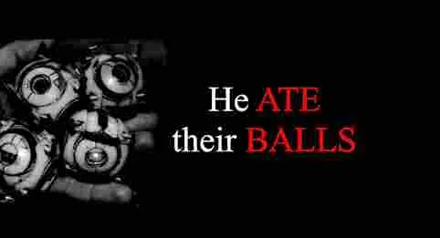

Welcome to the SANDDOLLAR documentation!
Made by Earth

an image of our beloved friend kiwifella (Or a handful of personality cores eating their balls.)
First some stuff i'd like to go over before we get into documenting everything
1. What is Sanddollar?
A: Sanddollar is a mysterious server that appeared in the half life 2 server browsers tab, it can be accessed by using the `gamemenucommand openserverbrowser` command in Half-life 2. The investigations name was given after the server which is usually called "SANDDOLLAR"
2. Who is Hero?
A: We do not know much about hero, however he does seem to be good friends with Dan (The server hoster), He often appears in the server and usually stands around a corner in MGEN_OUTPUT_NULL.
3. Who is the team investigating in this server?
A: It is actually quite a few people who have contributed to this website. The list of those people are :
Earth @earthgmod on discord
Kiwifella @iwillburnyourhousewiththelemons On discord
Pioneer10 @marz_sol On Discord
Subwern @subwern On Discord
mt_1056 @mt_1056_81405 On Discord
grub PL @grubasekpl On discord
DOCUMENTED STUFF
Known Server Admins
Dan
Hero
Common Maps
MgenOutputNull
MgenOutput
LastAnchor
DevBox